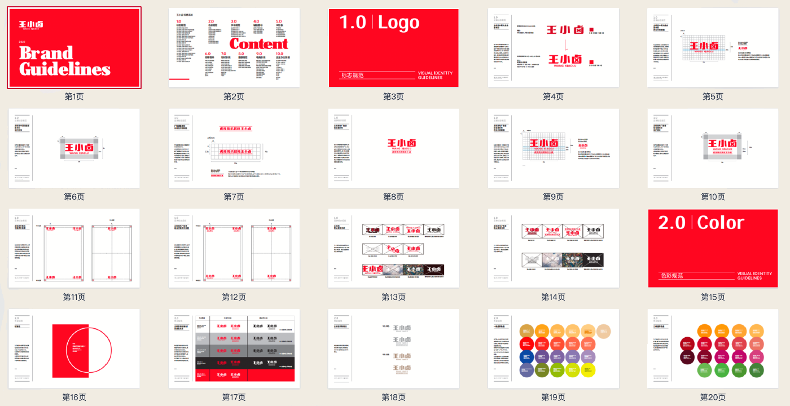
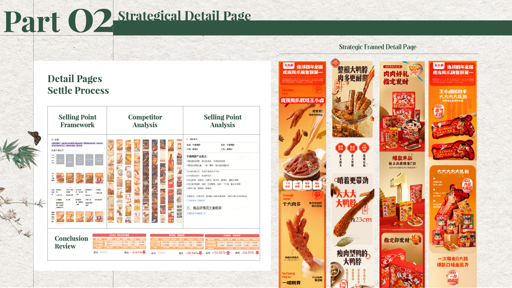

A visual system designed to keep learning across channels.
ClientWang Xiaolu
RoleDesign Manager / System Strategy & Governance
Scope
VIS, digital guidelines, templates, marketplace and social commerce


I built an e-commerce visual identity system and digital design guideline across Tmall, JD, Douyin and Pinduoduo. The aim was to replace one-off page production with a reusable language that could protect the brand while adapting to the pace and behaviour of each channel.
Homepage, campaign and product-detail work needed to respond to different platform conventions, sales rhythms and production teams. Without a shared system, quality and efficiency depended too heavily on individual judgement.
Layout, typography, imagery, product modules and platform adaptations were articulated as a practical design language rather than a static brand document.
Templates for homepages, product pages, campaigns and launches made proven design decisions easier to reuse, modify and evaluate.
Internal and agency SOPs structured briefs, review, quality assessment, revisions and delivery so the system could work beyond the core design team.

The strongest systems retain a recognisable brand core while letting each platform behave like itself. Design governance is most valuable when it helps a team test, learn and move faster—not when it only enforces rules.